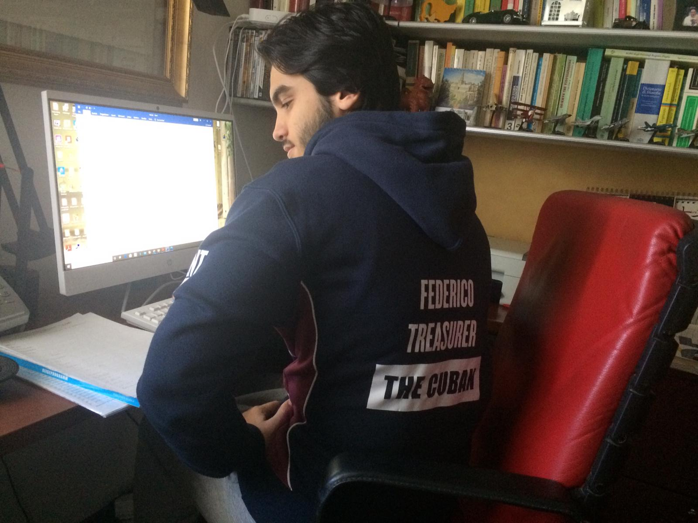

Treasurer of the Equestrian Society - 2019/2020
In my last year of University, I have been elected for the role of Treasurer by the members of the Equestrian Society and managed thousands of income and expense money. During this experience, I learnt how to manage and be responsible for a substantial budget and how to effectively work in a team. Together with the other committee members, we were able to achieve our goals and run efficiently the club's expenses. I created on my own an excel spreadsheet to make a budget plan and track all the inflows and outflows during the year. Thanks to this and the combined effort of all the committee members, we were able to recover from a conspicuous debt, maturated in the previous year, with a considerable surplus.
Assistant Accountant for Brett Group - 2019

In August of 2019 I had a work experience as assistant accountant for Brett. I mainly worked on the benefit pension scheme and I was supervised by a senior accountant. During this experience I had the opportunity to learn many things about accountancy and how to track a great amount of inflows and outflows. My job was to update the scheme to the new year by checking the inflows and outflows on an excel spreadsheet. Here, I used the calculations of the previous year to update the data for the new year. I, then, transferred the updates in a Word report and printed the results. At the end, I have organised all the files and important sheets in a binder for the senior accountant. It was challenging at the beginning, but I gradually managed to pick up the job and successfully finished it sooner than expected. This was rewarded with a trip to one of Brett's sites, where I learnt many interesting procedures in the distribution of building materials.
Data Analyst trainee for D.M.I S.r.l. distribuzione orologi FRANCHI - 2017
I had my first intership in the summer of 2017. For this job, I worked with data and statistics as a data analyst trainee. My duties were to analyse the most sold items, understanding the possible causes and write a report. I had reports to hand over to my employer at the end of each week. During this internship I learnt many things, including how to prioritise, organise and get the work completed on time. I initally started with data that were already analysed by the senior analyst; I managed to quickly acquire a good understanding of the role and started to work with new data sooner than expected. I was also responsible for public relations and translation with foreign customers when needed. My employer taught me and this was the first time I learnt how to deal with customers, with seriousness and efficiency. After a couple of weeks, I fully understood what to say and the steps to follow. One day, the office was very busy and there was a customer needing assistance; I grabbed the occasion and used my knowledge to help the customer. Once finished, my employer noticed what I did and was happy with the outcome, as the customer I helped.